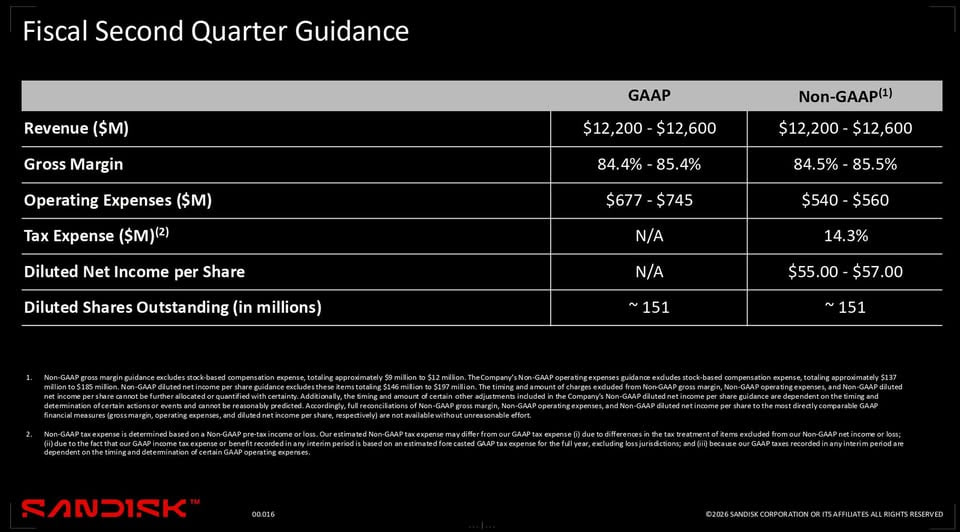

過去 26 小時共 2 則，都是同一件事：Sandisk（SNDK）10/29 公布的 FY2027 第一季財報與法說會重點，外加一張下季財測投影片。重點是 NAND 長約鎖量、AI 推論帶動的 KV cache／SLC 新需求，以及 HBF 進度。
SNDK 1Q
看起來整個 nand 市場開始收斂現貨市場，此外 SLC 有可能是新的變數，由於其會吃掉更多產能
- 已簽 NBM 佔 FY27 bit 約 50%、FY28 約 2/3。對照同業，SK hynix 簽 14 家 LTA、Samsung 簽 10 家、另 10 家洽談中、Kioxia 目標 2028 年 LTA 佔 50% (source:TF)
- CEO 認為 KV cache 到 2030 年會佔 AI 資料中心 flash 約 1/3，AI 資料中心需求規模會接近今天整個 NAND 產業
- 客戶在架構討論中要求 SLC，理由是 agentic 工作負載的耐久度
- SLC 對 TLC/QLC 的 trade ratio 是 3:1 到 4:1，如果 SLC 需求成形，會直接吃掉 TLC/QLC 供給
- 推論與 agent orchestration 的 NAND 需求跟著 CPU 走，約每顆 CPU 60-90 GB
- Sandisk 維持中高十位數 bit 成長、中個位數 capex 比，跟同業一樣維持擴產紀律，保守看緊到 2028
- Intel 財報被拿來問，記憶體漲價與缺貨幹翻 PC 需求。SNDK 認為現在這兩季是 yoy 最鳥的谷底。對記憶體廠來說也不完全是需求打擊，他們更主動供應 datacenter
- 第一顆 HBF die 已 tape out，HBF 不在 2030 財務模型內，定位是補 HBM 容量層，承接大模型、長 context、膨脹的 KV cache

#6518 圖為 Sandisk 法說投影片「Fiscal Second Quarter Guidance」：營收 122–126 億美元；毛利率 GAAP 84.4–85.4%、Non-GAAP 84.5–85.5%；Non-GAAP 營業費用 5.4–5.6 億美元；Non-GAAP 稅率 14.3%；Non-GAAP EPS 55–57 美元；稀釋股數約 1.51 億股。
講解
先看數字。FY27 Q1 營收 110 億美元（季增 23%、年增 378%），Non-GAAP 毛利率 85.1%、EPS 49.51 美元，都優於財測與市場預期；資料中心營收 48 億（季增 61%），消費性只剩 3.97 億（季減 29%）。下季財測就是圖上那張：營收再成長到 122–126 億、EPS 55–57 美元（拆股前；8 拆 1 於 11/19 生效，換算約 6.88–7.13 美元）。85% 毛利率對記憶體廠非常罕見，代表目前完全是賣方市場、價格大漲。不過財報後股價仍跌約 5%、盤後再跌，市場擔心估值、客戶過度集中於少數 AI 大客戶，以及需求時點。公司也提醒 Q3 歷來是季節性最弱的一季，要保守建模。
NBM／LTA 是什麼。Sandisk 把長期供貨協議叫 NBM（客戶預先承諾量與價、部分附預付）。FY27 約 50%、FY28 約 2/3 的位元已被長約綁住，公司說約 95% 對象是投資等級公司。對記憶體這種景氣循環產業，長約比重越高，代表現貨市場可流通的量越少，也就是貼文說的「收斂現貨市場」，價格波動與下行風險理論上變小。同業對照數字貼文註明來自 TrendForce：Kioxia 2028 年 LTA 佔 50% 目標有 TrendForce 7 月報導佐證；SK hynix 簽 14 家 LTA 有其他媒體報導，但該報導談的是整體記憶體（含 DRAM），不一定專指 NAND；Samsung 10 家的數字我沒找到原始出處，視為未經查證的轉述。
KV cache 與 SLC。大型語言模型推論時，會把先前 token 算出的 key/value 暫存起來（KV cache）避免重算；context 越長、agent 多輪對話越多，KV cache 越大，裝不下 HBM／DRAM 就往 SSD 放。CEO 估到這個十年末，KV cache 約佔 AI 資料中心 flash 的 1/3，而 AI 資料中心機會可接近今天整個 NAND 產業規模（這是管理層的展望，不是已實現數字）。SLC 是每個記憶單元只存 1 bit，速度與耐寫次數遠高於 TLC（3 bit）/QLC（4 bit），但同一片晶圓產出的容量只有 1/3–1/4，所以「trade ratio 3:1–4:1」意思是每生產 1 bit SLC 要犧牲 3–4 bit TLC/QLC 的產能。若 agentic 工作負載真的大量改用 SLC，等於產業有效供給被吃掉，對價格是利多。但要注意：管理層在法說上明說 SLC 需求「現在預測影響還太早」，貼文用「有可能是新的變數」的措辭算是恰當，還不是已成形的需求。
資本紀律。capex 約佔營收中個位數百分比（本季 3.4%）有查到，公司也說不會為了衝位元成長加速 BiCS 製程轉換。這代表廠商刻意不擴產，供給偏緊。貼文提到的「中高十位數 bit 成長」「每顆 CPU 60–90 GB」「保守看緊到 2028」我查到的摘要中沒有逐字出現，可能出自法說 Q&A，暫列為貼文轉述。
PC 與 Intel。記憶體漲價、缺貨讓 PC 出貨受壓。我查到的說法是：管理層認為今年 PC 出貨量下滑、明年小幅下滑，但每台 PC 的容量（exabytes）仍會成長；貼文說「這兩季是 yoy 谷底」的說法我未在摘要中確認。另一個角度是，消費性營收季減 29% 正是記憶體廠主動把產能轉給資料中心的結果，所以不完全是需求打擊。
HBF。High Bandwidth Flash 是把 NAND 用類似 HBM 的堆疊、高頻寬方式接到 GPU 旁，容量比 HBM 大很多但速度較慢，定位是 HBM 下面的容量層，承接大模型權重與長 context 的 KV cache。首顆 die 已 tape out（完成設計送製造），樣品預計明年；公司明說 HBF 不在 Investor Day 的長期財務模型內，所以目前是額外選擇權，還沒有營收貢獻，量產時程與客戶採用都還是未知數。
貼文清單
來源